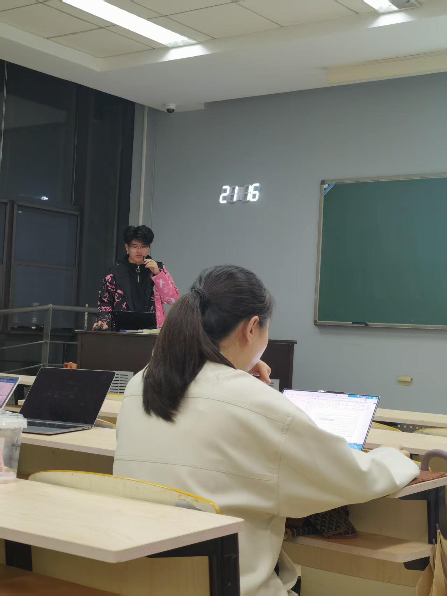
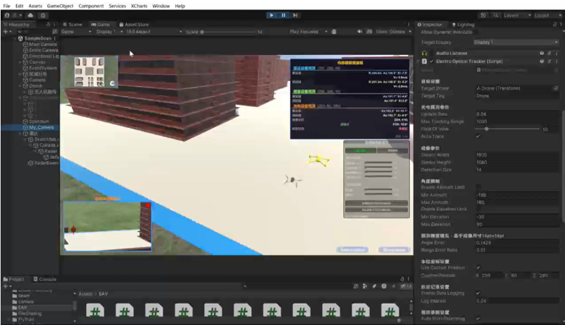
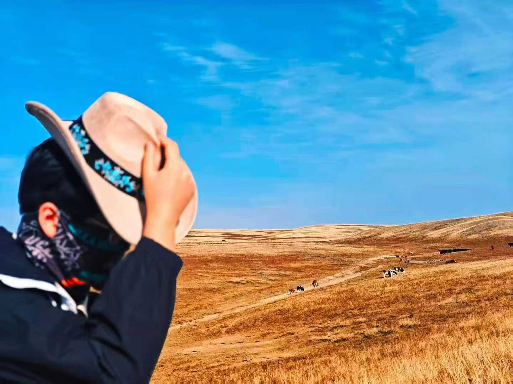
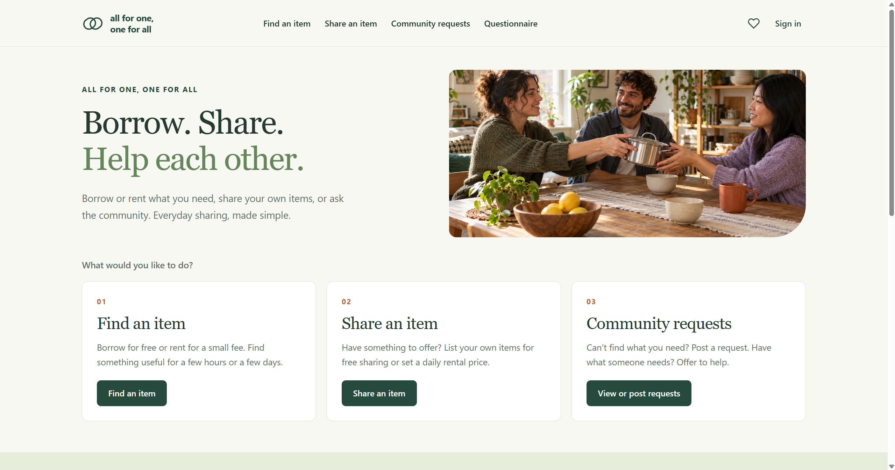
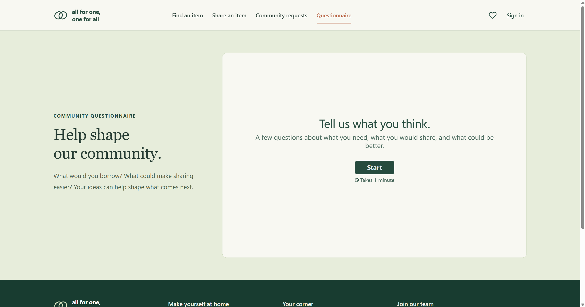

Smarter low-altitude sensing
I'm taking part in a national-level research project on strategies to reduce costs and improve efficiency in low-altitude intelligent sensing using data from multiple sources.


HELLO FROM CHINA

Jonas Zhu Gezhiyu
I come from China and study Finance at Renmin University of China. In August, I began a one-year exchange in France at KEDGE Business School, where I am studying start-ups. I enjoy learning how ideas travel between disciplines and cultures.
Explore ChinaSTUDY
At Renmin University of China, I am a third-year Finance student. My coursework has taken me through microeconomics, macroeconomics, econometrics, calculus, commercial banking and human resource management.
At KEDGE Business School, I am exploring start-ups and turning new ideas into practical projects. I received China's National Scholarship in both my first and second years of university.
LIFE
I have loved exploring new places since childhood. One day, I hope to travel to every corner of the world, discovering its landscapes, people and food along the way.
I love science fiction in both books and films. Liu Cixin's The Three-Body Problem drew me in with its immense imagination. I also enjoy films such as Interstellar, Inception and Tenet, which make me think about time, reality and our place in the universe.
Meet my cat, Doudou. Doudou joined our family in October 2023 and has been enjoying a carefree life ever since.
When Doudou first came home, my little cat was still quite slim and very shy. Doudou was scared of people and didn't dare come close to us yet. Even mealtimes weren't very exciting: the appetite was still quite small.
“Life is more than the everyday; there is poetry and faraway places.”
IDEAS IN PROGRESS
I'm taking part in a national-level research project on strategies to reduce costs and improve efficiency in low-altitude intelligent sensing using data from multiple sources.


My team is developing a platform where nearby students can share or rent items. The idea is to meet short-term needs while helping students avoid unnecessary purchases.

